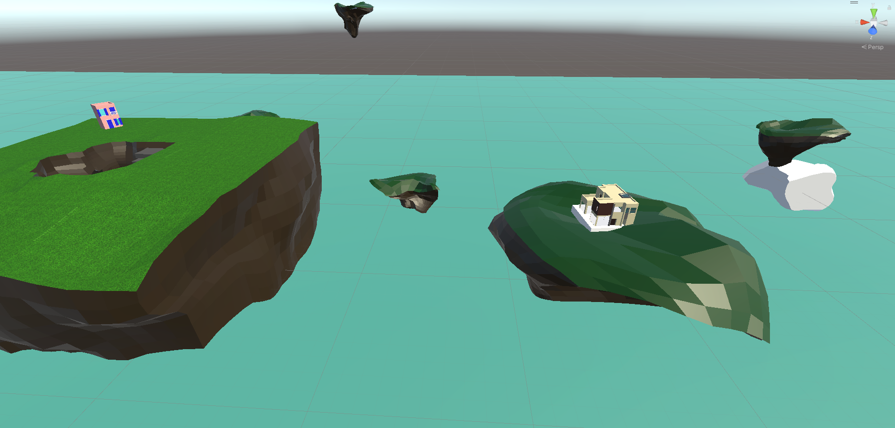
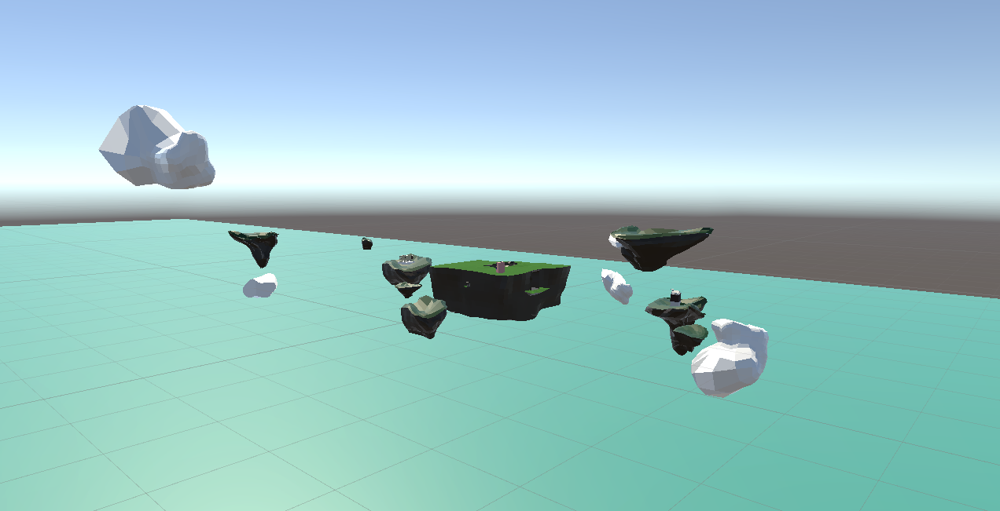
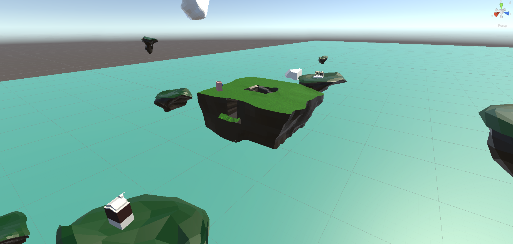

Dans cet espace, vous pouvez voir des îles qui flottent autour d'un havre principal. Au centre de celui-ci, un escalier mène à une cave. Le voyageur peut emprunter trois tunnels. L'un se rétrécit, ce qui crée un environnement oppressant. L'autre s'agrandit et le dernier se termine abruptement. Les deux premiers permettent d'accéder à une autre perspective sur les îles. Il n'y a qu'une fine bande de terre à la fin du tunnel. Le visiteur est ainsi poussé à vouloir rester dans le tunnel qui est plus rassurant mais aussi à s'approcher dangereusement du bord afin de mieux apprécier la vue. La surface de l'île principale est plane permettant un grand angle de vue. Vous pourrez remarquer les trois maisons. J'ai recréé les trois espaces dans lesquels j'ai habité dans mon enfance et adolescence. Chacune a son île et son angle de vue. Ses espaces flottent les uns à côté des autres sans se percuter.
  